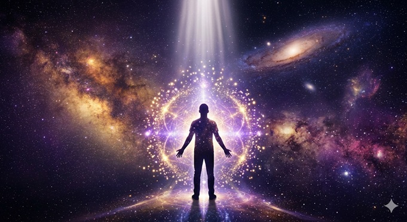

Ser Divino
✦ DisponibleInspirada en "Creep" de Radiohead
Del dolor de sentirse "bicho raro" al despertar de reconocerse como ser de luz. Una inversión total del arquetipo del rechazo.
Verso 1
Cuando te miro
me pregunto si sueño
hay algo en ti
que me hace recordar
Que vine aquí
con un propósito claro
que elegí este mundo
para despertar
Pre-Coro 1
Pero a veces
la oscuridad me envuelve
y olvido quién soy
y de dónde vine
Coro
Soy un ser de luz
soy completo, soy real
quiero estar aquí
en este mundo terrenal
Merezco el amor
merezco la paz
soy exactamente
lo que vine a ser
Verso 2
Floto en el aire
cuando recuerdo mi esencia
que antes de nacer
elegí cada paso
Vine a aprender
a reír, a caer
a amar profundamente
a sanar y crecer
Pre-Coro 2
Y cuando dudo
escucho esa voz dentro
que dice: "recuerda,
siempre has sido entero"
Coro
Soy un ser de luz
soy completo, soy real
quiero estar aquí
en este mundo terrenal
Merezco el amor
merezco la paz
soy exactamente
lo que vine a ser
Puente
No me escondo más
no me avergüenzo de quién soy
soy sagrado, soy perfecto
soy la expresión del amor
Soy sagrado… soy perfecto…
soy la expresión del amor
Coro Final
Soy un ser divino
soy completo, soy real
elegí estar aquí
en este mundo terrenal
Merezco el amor
merezco la paz
y hoy lo recuerdo:
soy todo lo que soy
Outro
Vine a existir…
vine a brillar…
vine a amar…
vine a estar…
¿Alguna vez has sentido que no encajas, que no mereces, que eres “demasiado poco”?
Esta canción es para recordarte quién eres en verdad.
“Ser Divino” nació de reimaginar “Creep” de Radiohead — una de las canciones más icónicas sobre el dolor de sentirse invisible y no merecedor de amor. La transformamos por completo: del arquetipo del rechazo al despertar de la consciencia divina.
Porque en un mundo alterno… ya lo recuerdas.
Eres un ser de luz. Elegiste venir a este mundo con un propósito. Mereces amor, paz, abundancia y felicidad — no porque lo hayas ganado, sino porque es tu naturaleza esencial.
Esta canción es una meditación activa. Escúchala repetidamente y deja que sus palabras siembren nuevas creencias en tu interior.